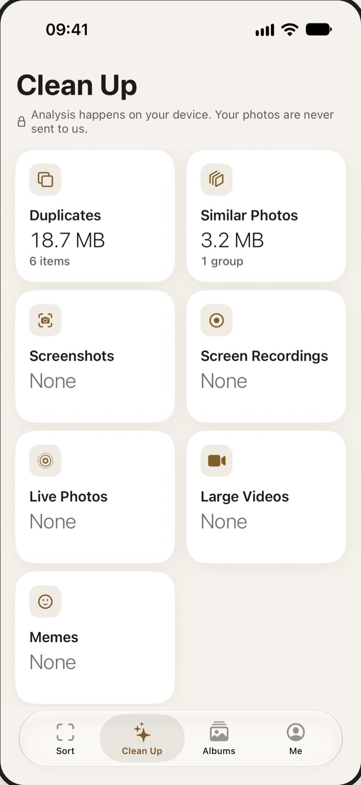
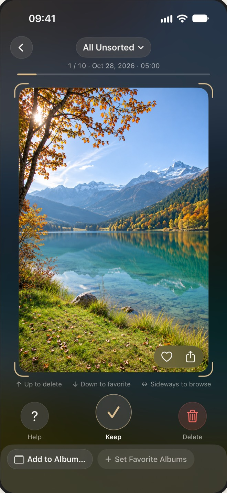
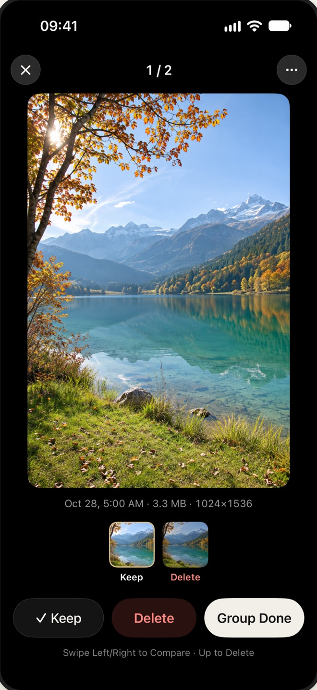
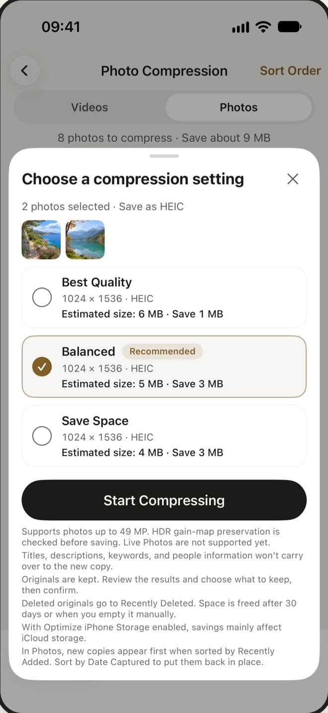
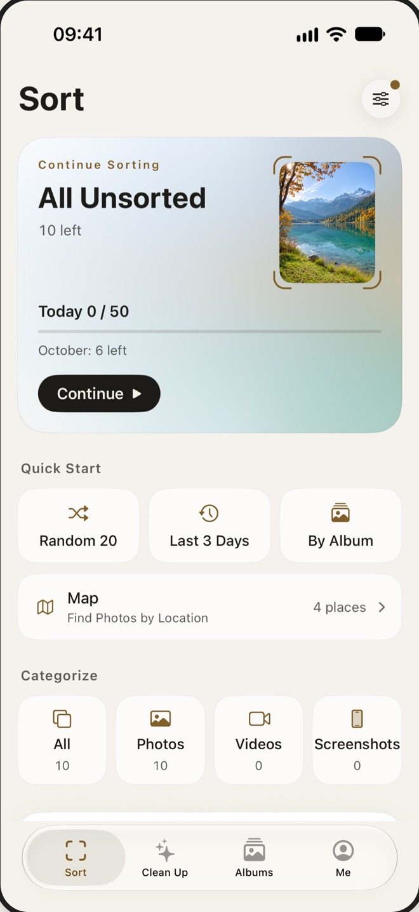
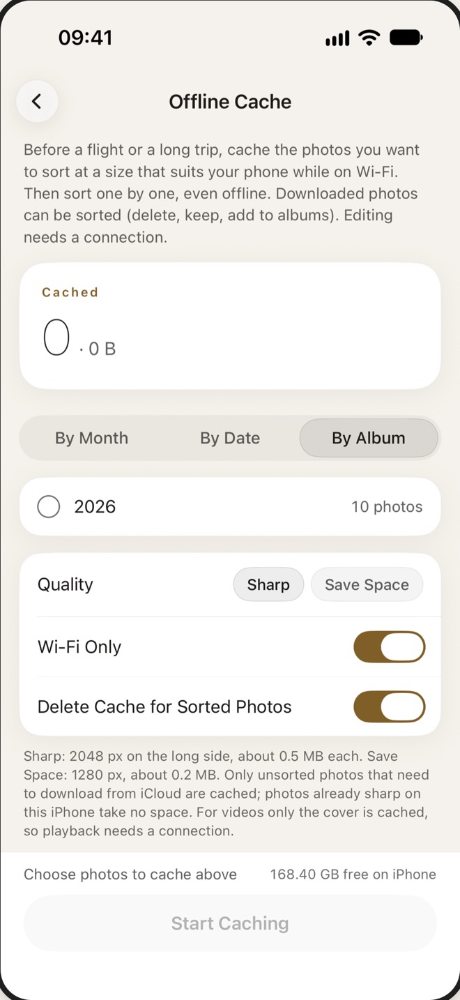

See what takes the most room
Duplicates, similar shots, screenshots, screen recordings, Live Photos, large videos and memes, listed separately.
ZenPic · Photo Cleaner
However many photos you have, you can get through them. ZenPic turns your camera roll into small batches you can finish in a few minutes. Stop whenever you like and pick up right where you left off.
Scan with your iPhone cameraIt opens the App Store page
01 · Swipe to sort
Pick a month, an album, or a random handful. Swipe up to delete, down to favorite, sideways to browse. Undo anything you change your mind about.

This phone is live. Try it.↑Up to delete↓Down to favorite↔Sideways to browse
Nothing goes without your say. Photos you toss wait in ZenPic’s Trash until you confirm. iOS asks once more before deleting from your library, and deleted items stay in Recently Deleted for 30 days.
Kept0Favorites0Left6
02 · Clear the clutter
Duplicates, similar shots, screenshots, screen recordings, Live Photos and large videos, each in its own pile. Suggestions are lined up for you to check before anything moves.

Duplicates, similar shots, screenshots, screen recordings, Live Photos, large videos and memes, listed separately.

Similar photos are grouped with a suggested keeper. Nothing moves until you confirm.

Three quality levels, for photos too. The compressed copy is saved as a new item and your original stays put until you decide.

By month, by album, by place on the map, or 20 at random. Your progress is saved, so next time you carry on from there.
03 · Offline
Save iCloud photos to your iPhone before you leave. On a flight or a long commute, you can still keep, toss and file them.
These older photos live in iCloud. Try turning on Airplane Mode.



Offline copies are smaller versions for viewing and sorting, not backups of your originals. Photos you haven’t saved ahead may need a connection if they’re in iCloud, and so do editing, full video playback, maps and address search.
04 · Photo to PDF
Receipts, whiteboards, slides and documents: too useful to delete, too many to keep.
When it isn’t sure, it leaves the photo as it is.
Pages follow the order you shot them, with three quality levels to choose from.
With the PDF saved, clear the original photos in one go.The space comes back once Recently Deleted is emptied.
05 · Privacy
Sorting and analysis run on your iPhone.
Maps, place names and address search come from Apple Maps, so the places you view and the text you search go to Apple. iCloud Photos keeps working the way you’ve set it up.
Read the full privacy policy →Memories kept. Paperwork filed.
Phone cleared.
ZenPic
Swipe, Sort, Clear the Clutter
Download on the App Store Search “ZenPic: Photo Cleaner” on the App Store